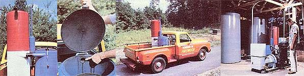
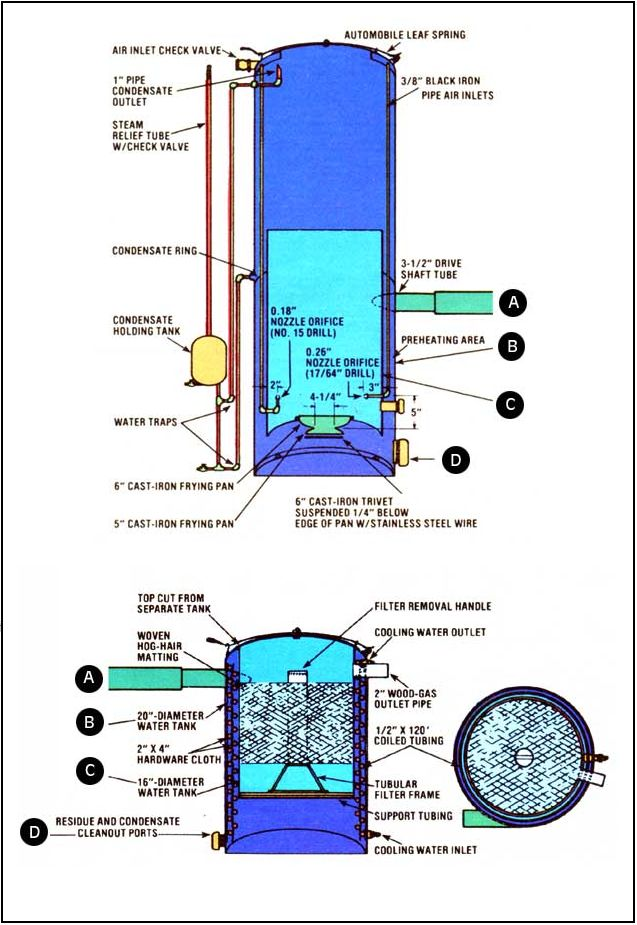

More about MOM's woodburning truck and homestead electricity-generating plant: In our last issue (see MOTHER N0.70, page 182) we described our 10-kilowatt power- and heat-generating plant that uses scrap wood as the fuel for its internal combustion generator. At that time, we promised to update the article as we accumulated more information from the series of controlled-as well as "real world"-tests that followed the completion of the experimental equipment.
As expected, the two-month "trial by fire" brought out both the good and bad features of our cogeneration system, and also gave us an opportunity to try several new concepts that, it now appears, might [1] increase the gasifier's efficiency, [2] make it more practical to use, and [3] reduce the maintenance required by the setup.
A STUDY IN SMOKE
In a nutshell, our extended testing reinforced what we had already learned about wood gas, but also caused us to examine some of the quirks of the gasification process. For example, after several attempts to come up with an inexpensive and durable filter medium (some that we tested weren't particularly effective in cleaning the smoke, and others tended to clog too easily), we finally took a hard look at the gasifier itself, hoping we might be able to devise modifications that would allow it to burn-rather than pass along-some of the tar and ash that, in the early models, had collected in the condenser and filter chambers.
We also found that the gasification unit on our stationary generator sometimes "slowed down" and couldn't meet the engine's fuel demands, simply as a result of the wood supply's forming a "bridge" over the hearth and blocking the passage of fresh chunks into the combustion zone. Such a situation had rarely occurred in the mobile gasifier fueling our pickup truck (see MOTHER NO. 69, page 126), because that unit was subject to constant movement.
In addition, we discovered that the excessive summer humidity in our area, coupled with the high moisture content of some types of wood, occasionally resulted in the production of an unusually large amount of steam inside the gas generator. As a result, the temperatures within the hearth weren't always as great as they should've been, and that relative coolness lowered the quality of the gaseous fuel.
So, rather than look for an especially dry fuel to suit the machine, we decided to try to adapt the gasifier to the large supply of moist wood we'd already gathered. We aimed to make the "burn" more efficient by redesigning the air inlet system to include a preheating section that tempers the atmosphere before it enters the combustion zone. The new manifold is made up of a series of sixteen 3/8" black iron pipes, which are evenly spaced around the hearth area and extend from the top of the gasifying chamber (where they're connected, through a distribution ring, to the inlet check valve) to a point about four inches above the restriction at the base of the hearth. This setup allows incoming fresh air to pick up waste heat from the chamber itself, and especially from the area surrounding the combustion zone through which the hot fuel gases pass on their way to the condenser and filter.
Then, to solve the bridging problem, we oriented the outlet tips of the manifold pipes so that the "odd" eight point straight upward ...and the remaining "even" nozzles aim inward, toward the center of the hearth opening (see the illustration). The benefits of this arrangement are twofold: The horizontal jets provide combustion air for oxidation at the entrance level ...while the vertical outlets reduce the size of the chunks of wood about to enter the hearth by cutting away at them like miniature torches, thus eliminating the possibility of having a "logjam" block the flow of fresh fuel.
Finally, in an effort to decrease the amount of moisture collecting within the gasification tank, we provided a pair of condensate outlets-one of which is a 1" pipe near the unit's fill lid, and the other a condensation ring fastened to the inside of the tank at its midpoint-which together route excess liquid from the gasifier, through individual water traps, and into a small storage container that can be drained periodically. This vessel, in turn, is plumbed into a check valve-equipped steam relief tube, which vents excess pressure and vapor as they build up. (The water traps, of course, prevent unwanted air from being drawn into the gasifier, by vacuum, when the engine is running.)
A THREE-PART PROCESS
After modifying the gasifier, we decided-in order to reduce weight and space requirements-to go ahead and redesign the condenser/filter system as well. The new unit is nothing more than a 16"-diameter water heater tank encased in a larger (20") vessel. The space between the two containers is filled with a heat exchanger coil (through which cool water is routed when the gasifier is in operation), and the inside of the smaller tank houses a roll of woven hog-hair matting that's wound around a removable frame. Inlet and outlet pipes allow the fuel gases to pass through the system.
In practice, the new piece of equipment performs three separate functions. First, like a cyclone filter, it centrifugally forces the heavier ash particles in the wood gas to strike the walls of the outer tank and drop to a collection chamber near its base. Second, as the whirlwind of gaseous fuel spirals around the water fill ed coils, it [a] cools rapidly and [b] loses, to condensation, any moisture not disposed of in the gasifier. Finally, the dry-relatively clean-gas goes through the woven filter medium, where it is stripped of any remaining dust, ash, and soot before entering the engine.
FACTS AND FIGURES
While working out these modifications, we were also able to come up with several sizing criteria for the design of the gasification unit. In general, the dimensions used in certain parts of the wood "cooker" are dependent upon the size and/or operating . speed of the engine 10 be fueled. For example, our homestead utility system's 195-cubic-inch engine turns at a continuous 1,800 RPM. Given that displacement and speed, the total nozzle area is 0.627 square inches (each of the eight horizontal jets is 0.26" in diameter, and the remaining eight vertical jets are 0.18" across), the distance between the nozzles and hearth restriction is 5", and the hearth diameter is 4-1/4". On the other hand, the 250-cubic-inch powerplant used in our Chevrolet truck (which turns at about 2,800 revolutions per minute at 55 MPH, the speed at which most of its mileage is logged) requires an overall nozzle area of 1.237" (horizontals 0.36", and verticals 0.26" in diameter) ...a nozzle-to-hearth separation of 5-1/2" ...and a hearth restriction width of about 5-1/4". (Generally, the total nozzle area should be 5 to 10% of the overall hearth area.)
To size the openings in the nozzles, we simply drilled holes of the proper diameter through 16 pipe caps, and threaded them over the feed-tube outlets. Likewise, the orifice at the base of the hearth (that platform, by the way, is fashioned from a No. 5 cast-iron frying pan) was made by boring a series of adjacent holes in a circular pattern and then knocking out the resulting "plug". In any case, the dimensions given are merely guidelines, and-should you wish to construct a unit of your own-you can likely extrapolate from these figures according to your engine's displacement and working speed, and still come out in the ballpark.
PERFORMANCE IS IMPROVED
To this point, the design changes we've made have worked well on both our stationary generator and our pickup truck. Probably most noticeable is the fact that we're getting consistently good-quality gas and producing about a tenth of our former unit's amount of filter-clogging waste in the process (thereby reducing maintenance chores substantially). Furthermore, we've discovered that excessively moist fuel is a definite detriment despite our design changes, and so have limited our use of wood to that which contains a maximum of 25% water . . a practice which discourages the burning of "green" fuel. (Of course, it would be possible to dry out wet scraps, using heat from the generator, if seasoned waste should become difficult to find.) As far as we can tell, the work-per-pound figure can vary widely and depends a lot on, again, the fuel's moisture content. Our Chevrolet truck will go anywhere from 80 to 110 miles-at 55 MPH-on its 110pound allotment of scraps, and the generating plant burns about 30 pounds per hour when running at its rated speed and producing 10,000 watts of AC power.
In short, we've come some distance since our last report and hope to have even more wood-gas-related information in these pages as time goes on. Meanwhile, we have enough confidence present system to declare A,> that we plan to enter the California-New York Future Fuels Challenge Rally (announced on page 1.50 of MOTHER NO. 69) ... and of course we'll be covering that momentous event every foot of the way!
|
 [1] The updated gasifier is lighter, more compact, and in many ways more practical than its predecessor. [2] Condensed and filtered wood gas goes directly to the modified carburetor through this outlet tube. Note the woven filter medium below. [3] We've realized an improvement in performance and mileage with the new apparatus, as well. [4] The redesigned stationary components take up a minimum of floor space, and thus leave plenty of sheltered area for scrap lumber storage ...or for wood heating and drying equipment. |
 |
|